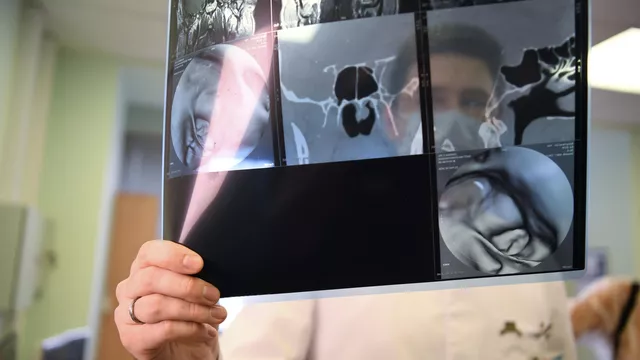
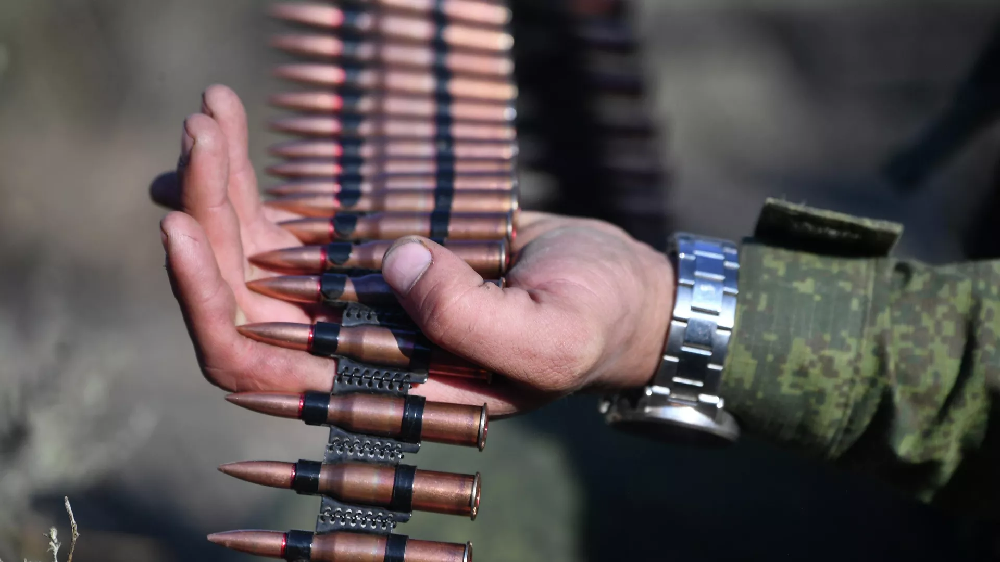

Онколог назвал самые распространенные виды рака у россиян
МОСКВА, 11 фев - РИА Новости. Самым распространенным видом рака у мужчин в России является рак трахеи, бронхов и легкого, на него приходится более 16%, а у женщин – рак молочной железы (больше 22%), заявил в интервью РИА Новости главный внештатный онколог Минздрава России, генеральный директор ФГБУ "НМИЦ радиологии" Минздрава России, академик РАН Андрей Каприн.
"У мужчин это рак трахеи, бронхов и легкого, 16,4% в структуре заболеваемости злокачественными новообразованиями. Надо отметить, что этот рак во всех странах вносит большую лепту в показатели смертности. У женщин – рак молочной железы, больше 22%", - сказал Каприн.
Он отметил, что благодаря скрининговым программам 72% случаев рака молочной железы выявляются на ранней стадии, в отношении рака легкого этот показатель ниже, так как диагностировать заболевание на ранней стадии значительно сложнее.
В Кузбассе объявили режим "черного неба" еще для нескольких территорий
КЕМЕРОВО, 10 фев - РИА Новости. Режим неблагоприятных метеоусловий кроме Кемерово до 13 февраля объявлен также для Новокузнецка, Прокопьевска и Новокузнецкого муниципального округа, предприятиям рекомендовано сократить выбросы в атмосферу, сообщается на сайте министерства природных ресурсов и экологии региона.
Ранее с 12.00 (8.00 мск) 10 февраля до 18.00 (14.00 мск) 13 февраля для города Кемерово был введен режим неблагоприятных метеоусловий.
"В соответствии с прогнозируемыми метеорологическими условиями и ожидаемой синоптической ситуацией, в городе Новокузнецке ожидаются неблагоприятные метеорологические условия, способствующие накоплению загрязняющих веществ в атмосферном воздухе. Предприятиям города рекомендуется задействовать мероприятия по сокращению выбросов в атмосферный воздух согласно объявленному режиму с 18.00 (14.00 мск) 10.02.2023 до 18.00 (14.00 мск) 13.02.2023", - говорится в сообщении.

В Херсонской области ввели вознаграждение за сдачу нелегального оружия
СИМФЕРОПОЛЬ, 10 фев - РИА Новости. В Херсонской области введено денежное вознаграждение за сдачу нелегального оружия, боеприпасов и взрывчатых веществ, сообщил врио губернатора региона Владимир Сальдо.
В частности, согласно указу, выплаты за различные виды огнестрельного оружия варьируются от 2 тысяч до 10 тысяч рублей. Кроме того, также установлены выплаты за сдачу боеприпасов, мин, патронов, взрывчатых веществ и сообщения о местонахождения неразорвавшихся боеприпасов времен Великой Отечественной войны.
В Госдуме предложили не наказывать хакеров, работающих в интересах России
МОСКВА, 10 фев - РИА Новости. "Белых" хакеров на территории РФ или за её пределами надо освободить от ответственности, если они действуют в интересах России, сообщил глава думского комитета по информполитике Александр Хинштейн.
"Речь идёт о том, чтобы в целом проработать освобождение от ответственности для тех лиц, кто действует в интересах Российской Федерации в сфере компьютерной информации как на территории нашей страны, так и за её пределами. Но а более детально будем говорить тогда, когда получит это чёткую формулировку", - сказал он журналистам.
Также, по словам парламентария, на выездном заседании комитета по информполитике обсуждался вопрос подходов к требованиям работы операторов персональных данных.
"Есть несколько интересных предложений и концепций, которые мы будем дальше отрабатывать, это не отменяет нашей сегодняшней подготовки поправок в КоАП в УК за ответственность по утечке персональных данных. Но мы говорим о необходимости более комплексного подхода. Обсуждали конкретизацию термина "персональные данные", поскольку одна из проблем 0 что это слишком обще", - добавил он.